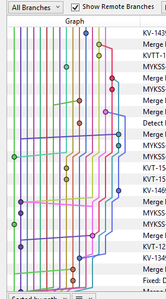

### Managing Research Software Projects # Workflow --- # What problems are we trying to solve? - Missing or duplicated work - "I'm sure I did that… or did you?" - No one knows what's happening next - "I think we're going to do that…?" - Complicated merges - This is not a happy project <a href="https://www.reddit.com/r/git/comments/2yt9ox/how_do_you_navigate_branch_spaghetti/"></a> --- # Use issues as a shared to-do list - "Version control tells you where you've been; issues tell you where you're going." - An issue's one-line title is its most important feature - Its tags are almost as important - Kind: `bug`, `feature`, `discussion`, `action` - State: `current`, `in-progress`, `ready-to-review` - Reason: `finished`, `wont-fix`, `duplicate` - Don't use for releases: quickly becomes overwhelming --- <h1 class="project-lead">As project lead</h1> - Triage bugs weekly - What should be closed? - What should be assigned? - Maintain the list of tags and their meanings - Recalibrate your productivity metrics - This is now your job --- # Create a pull request for every change - Gives people a way to give feedback - "Always" is simpler to enforce than "usually" - Remember that a PR is a marker - Always shows difference between source and destination branches - So source can be updated repeatedly based on reviews—a new PR is not required --- # To fork or not to fork? - Branches in one repo: easier to contribute to other people's work in progress - Branches in forked (per-contributor) repos: less chance of someone accidentally updating master - Main repository should belong to organization, not to an individual - Because people move on --- # A feature-branch workflow - `main` holds the most recent working version - Create a branch from `main` for each feature or bug fix - Give branches meaningful names (just like variables) - When the feature is done: - Merge `main` → `feature-branch` - Make sure everything still runs - Create a PR `feature-branch` → `main` --- # Managing releases - Create a branch from `main` when a report is published or the package is released - When fixes are needed: - Create a feature branch from `main` - Merge `feature` → `main` → `release` - Keeps the workflow consistent - Ensures that changes aren't misplaced - You may need to rename the release branch --- # Creating branches from branches - Try to avoid, but if you do… - Complete `first` - Build second on top of it - Merge `first` before second - Then merge into second and merge back - Graph of Git history should never have crossed lines <img src="feature-branch-workflow.png" alt="Feature-Branch Workflow" /> --- <h1 class="project-lead">As project lead</h1> - Assign PRs to people for review - Remind people to claim issues and mark as in-progress when they create branches - Do reviews yourself - Handle merges to `main` - Prune old branches and stale PRs --- <h1 class="exercise">Who can do what?</h1> 1. Who can decide that an issue won't be addressed? 1. Who can decide that a fix isn't ready to be merged? 1. How are these decisions communicated? --- <h1 class="exercise">How clean is your project's history?</h1> Run this command: `git log --graph --abbrev-commit --decorate --all` 1. How well can you understand your project's history? 1. Look at someone else's history: how well can you understand it?